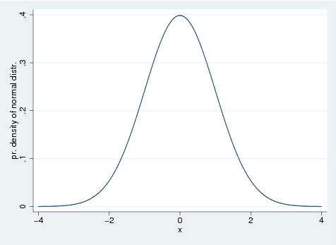

Home works for PH207x Health in Numbers
Table of Contents
Basics
di "hello world"
hello world
Use macro definition
local N = 41 di `N'+1
42
quietly suppresses output for the duration of command
quietly set obs 5 gen x = _n describe
Contains data
obs: 5
vars: 1
size: 20
-------------------------------------------------------------------------------
storage display value
variable name type format label variable label
-------------------------------------------------------------------------------
x float %9.0g
-------------------------------------------------------------------------------
Sorted by:
Note: dataset has changed since last saved
no; data in memory would be lost
r(4);
One can use r(...) or e(...) to get output from stata commands
quietly set obs 5 gen x = _n quietly summarize x di r(mean)
3 no; data in memory would be lost r(4);
Multi-line command
di /// "test"
test
Produce scatter plot
set obs 7 gen x = _n gen y = x^2 scatter y x

Plot a function
twoway function sin(x), range(0 10)

Plot two functions
twoway (function sin(x), range(-10 10)) (function cos(x), range(-10 10))

Bar Charts
local nobs = 10 set obs `nobs' generate x = _n gen lev = 1 if _n<=`nobs'/2 replace lev = 0 if _n>`nobs'/2 graph bar x, over(lev)
Histogram
set obs 1000 generate x = rnormal() twoway (histogram x, bin(20)) (function normalden(x), range(-4 4))

Box plot
set obs 10 generate x = _n generate y = _n + 1 graph box x y

Horizontal box plot
set obs 10 generate x = _n generate y = _n + 1 graph box x y, horizontal
Combining separate graphs into one graph
set obs 10 generate x = _n generate y = _n + 1 twoway (function normalden(x), range(-4 4)), name(f1) twoway (function normal(x), range(-4 4)), name(f2) graph combine f1 f2, row(2)

Probability distribution functions
normal
twoway function normalden(x, 0, 1), range(-4 4) ytitle("pr. density of normal distr.")

binomial
Plot binomial distribution: probability of observing n ore fewer successes then probability of one successes is p.
twoway (function binomial(30, x, 0.5), range(0 30)) /// (function binomial(30, x, 0.25), range(0 30)), /// legend( label(1 "p=0.5, n=10") label(2 "p=0.25, n=10") )

student
twoway (function tden(2, x), range(-10 10)) /// (function tden(10, x), range(-10 10)), /// legend( label(1 "n=2") label(2 "n=10")) /// ytitle("t-distribution")
Statistical functions
ttest
Mean-comparison tests
set obs 100 gen x = rnormal() sum x ttest x == 0
obs was 0, now 100
Variable | Obs Mean Std. Dev. Min Max
-------------+--------------------------------------------------------
x | 100 .0006276 1.061928 -2.885089 1.837664
One-sample t test
------------------------------------------------------------------------------
Variable | Obs Mean Std. Err. Std. Dev. [95% Conf. Interval]
---------+--------------------------------------------------------------------
x | 100 .0006276 .1061928 1.061928 -.210082 .2113372
------------------------------------------------------------------------------
mean = mean(x) t = 0.0059
Ho: mean = 0 degrees of freedom = 99
Ha: mean < 0 Ha: mean != 0 Ha: mean > 0
Pr(T < t) = 0.5024 Pr(|T| > |t|) = 0.9953 Pr(T > t) = 0.4976
no; data in memory would be lost
r(4);
set obs 20 gen x = rnormal(1.0) gen y = rnormal(1.5) ttest x == y
obs was 0, now 20
Paired t test
------------------------------------------------------------------------------
Variable | Obs Mean Std. Err. Std. Dev. [95% Conf. Interval]
---------+--------------------------------------------------------------------
x | 20 .6278007 .2067612 .9246643 .1950445 1.060557
y | 20 1.529019 .2938401 1.314093 .9140044 2.144033
---------+--------------------------------------------------------------------
diff | 20 -.901218 .3177534 1.421036 -1.566283 -.2361526
------------------------------------------------------------------------------
mean(diff) = mean(x - y) t = -2.8362
Ho: mean(diff) = 0 degrees of freedom = 19
Ha: mean(diff) < 0 Ha: mean(diff) != 0 Ha: mean(diff) > 0
Pr(T < t) = 0.0053 Pr(|T| > |t|) = 0.0106 Pr(T > t) = 0.9947
no; data in memory would be lost
r(4);
With group variable
local nobs = 1000 set obs `nobs' gen lev = 1 if _n<=`nobs'/2 replace lev = 0 if _n>`nobs'/2 gen x = rnormal(1) if lev==0 replace x = rnormal(2) if lev==1 graph box x, by(lev)
Immediate form of one-sample mean-comparison test
local obs = 20 local mean = 1.0 local sd = 1.5 local val = 1.8 ttesti `obs' `mean' `sd' `val'
One-sample t test
------------------------------------------------------------------------------
| Obs Mean Std. Err. Std. Dev. [95% Conf. Interval]
---------+--------------------------------------------------------------------
x | 20 1 .3354102 1.5 .2979784 1.702022
------------------------------------------------------------------------------
mean = mean(x) t = -2.3851
Ho: mean = 1.8 degrees of freedom = 19
Ha: mean < 1.8 Ha: mean != 1.8 Ha: mean > 1.8
Pr(T < t) = 0.0138 Pr(|T| > |t|) = 0.0276 Pr(T > t) = 0.9862
samsi
Sample size and power for means and proportions
sampsi 0.2 0.4
Estimated sample size for two-sample comparison of proportions
Test Ho: p1 = p2, where p1 is the proportion in population 1
and p2 is the proportion in population 2
Assumptions:
alpha = 0.0500 (two-sided)
power = 0.9000
p1 = 0.2000
p2 = 0.4000
n2/n1 = 1.00
Estimated required sample sizes:
n1 = 119
n2 = 119
signtest
Sign test of matched pairs
quietly set obs 20 gen x = rnormal() gen y = x + 1.0 + rnormal() signtest x=y
Sign test
sign | observed expected
-------------+------------------------
positive | 5 10
negative | 15 10
zero | 0 0
-------------+------------------------
all | 20 20
One-sided tests:
Ho: median of x - y = 0 vs.
Ha: median of x - y > 0
Pr(#positive >= 5) =
Binomial(n = 20, x >= 5, p = 0.5) = 0.9941
Ho: median of x - y = 0 vs.
Ha: median of x - y < 0
Pr(#negative >= 15) =
Binomial(n = 20, x >= 15, p = 0.5) = 0.0207
Two-sided test:
Ho: median of x - y = 0 vs.
Ha: median of x - y != 0
Pr(#positive >= 15 or #negative >= 15) =
min(1, 2*Binomial(n = 20, x >= 15, p = 0.5)) = 0.0414
no; data in memory would be lost
r(4);
set obs 20 gen x = rnormal() gen y = 0.15 + rnormal() signrank x=y ttest x=y
obs was 0, now 20
Wilcoxon signed-rank test
sign | obs sum ranks expected
-------------+---------------------------------
positive | 7 63 105
negative | 13 147 105
zero | 0 0 0
-------------+---------------------------------
all | 20 210 210
unadjusted variance 717.50
adjustment for ties 0.00
adjustment for zeros 0.00
----------
adjusted variance 717.50
Ho: x = y
z = -1.568
Prob > |z| = 0.1169
Paired t test
------------------------------------------------------------------------------
Variable | Obs Mean Std. Err. Std. Dev. [95% Conf. Interval]
---------+--------------------------------------------------------------------
x | 20 -.3721993 .2067612 .9246643 -.8049555 .0605569
y | 20 .1790187 .2938401 1.314093 -.4359956 .7940331
---------+--------------------------------------------------------------------
diff | 20 -.551218 .3177534 1.421036 -1.216283 .1138474
------------------------------------------------------------------------------
mean(diff) = mean(x - y) t = -1.7347
Ho: mean(diff) = 0 degrees of freedom = 19
Ha: mean(diff) < 0 Ha: mean(diff) != 0 Ha: mean(diff) > 0
Pr(T < t) = 0.0495 Pr(|T| > |t|) = 0.0990 Pr(T > t) = 0.9505
no; data in memory would be lost
r(4);
signrank
Equality tests on matched data
lincom
lincom computes combinations of estimators (z, p-values etc.).
Construct a liniear regression and use lincom
quietly set obs 10 gen x = _n gen y = x + 2*rnormal() quietly regress y x lincom 2*x
( 1) 2*x = 0
------------------------------------------------------------------------------
y | Coef. Std. Err. t P>|t| [95% Conf. Interval]
-------------+----------------------------------------------------------------
(1) | 1.856045 .5219802 3.56 0.007 .6523569 3.059734
------------------------------------------------------------------------------
no; data in memory would be lost
r(4);
TODO Tutorial 10
- Step 1
Calculate the Pearson correlation for the percent of patients who say their nurse always communicated well (nursealways) and the percent of patients who would always recom- mend the hospital (recommendyes).use datasets/hospitaldata.74f90a09d4da.dta pwcorr recommendyes nursealways, sig| recomm~s nursea~s -------------+------------------ recommendyes | 1.0000 | | nursealways | 0.6580 1.0000 | 0.0000 |
- Step 2
Now that you have established that these variables are correlated, you decide to fit a linear regression model to assess the relationship between recommendyes and nursealways. State your model.\(Y_i\) = percent of patients who always recommend the hospital
\(X_i\) = perecnt of patients who say that the nurse always communicates well
\begin{equation} Y_i = \alpha + \beta X_i + \epsilon_i \end{equation}where \(\epsilon_i \propto N(0, \sigma^2)\). Goal is to estimate and obtain measures of uncertainty for \(\alpha\) and \(\beta\). We use the method of least squares for estimation.
- Step 3
Construct a scatter plot with nursealways on the x-axis and recommendyes on the y axis. Use the scatterplot to evaluate the assumptions of simple linear regression. Assumptions:- Independent observations
- \(Y|X\) is normally distributed
- Homoscedasticity (constant variance)
- Linearity
use datasets/hospitaldata.74f90a09d4da.dta twoway (scatter recommendyes nursealways)
- Step 4
Fit the linear regression model. Provide estimates, confidence intervals, and interpreta- tions of the regression coefficients $α and \(\beta\).use datasets/hospitaldata.74f90a09d4da.dta regress recommendyes nursealwaysSource | SS df MS Number of obs = 3570 -------------+------------------------------ F( 1, 3568) = 2723.72 Model | 144368.851 1 144368.851 Prob > F = 0.0000 Residual | 189118.972 3568 53.0041962 R-squared = 0.4329 -------------+------------------------------ Adj R-squared = 0.4327 Total | 333487.823 3569 93.4401297 Root MSE = 7.2804 ------------------------------------------------------------------------------ recommendyes | Coef. Std. Err. t P>|t| [95% Conf. Interval] -------------+---------------------------------------------------------------- nursealways | 1.159487 .0222169 52.19 0.000 1.115928 1.203046 _cons | -19.21559 1.712829 -11.22 0.000 -22.57381 -15.85737 ------------------------------------------------------------------------------
- Step 7
Examine a residual plot. Using \(R^2\) and the plot, does the model appear to fit well? (Are there any outliers?)use datasets/hospitaldata.74f90a09d4da.dta regress recommendyes nursealways rvfplot
- Step 8
Using the regression line, predict the expected percent of patients who always recommend the hospital when the reported percent of nurses who always communicate well is 80%? Construct corresponding 95% confidence interval.use datasets/hospitaldata.74f90a09d4da.dta regress recommendyes nursealways lincom _cons + 80*nursealwaysSource | SS df MS Number of obs = 3570 -------------+------------------------------ F( 1, 3568) = 2723.72 Model | 144368.851 1 144368.851 Prob > F = 0.0000 Residual | 189118.972 3568 53.0041962 R-squared = 0.4329 -------------+------------------------------ Adj R-squared = 0.4327 Total | 333487.823 3569 93.4401297 Root MSE = 7.2804 ------------------------------------------------------------------------------ recommendyes | Coef. Std. Err. t P>|t| [95% Conf. Interval] -------------+---------------------------------------------------------------- nursealways | 1.159487 .0222169 52.19 0.000 1.115928 1.203046 _cons | -19.21559 1.712829 -11.22 0.000 -22.57381 -15.85737 ------------------------------------------------------------------------------ ( 1) 80*nursealways + _cons = 0 ------------------------------------------------------------------------------ recommendyes | Coef. Std. Err. t P>|t| [95% Conf. Interval] -------------+---------------------------------------------------------------- (1) | 73.54339 .1399631 525.45 0.000 73.26897 73.8178 ------------------------------------------------------------------------------
- Step 9
For a new hospital with 80% of patients reporting that nurses always communicate well, predict the percent of patients who will always recommend the hospital. Construct corresponding 95% confidence interval.di 73.54339 - invttail(3568, 0.025)*7.281745
59.266589
TODO Tutorial 11
use datasets/chis_healthdisparities.e85b34e4c45a.dta gen nopov = 1-poverty logit doctor nopov lincom nopov, eform
Iteration 0: log likelihood = -247.4035
Iteration 1: log likelihood = -245.14765
Iteration 2: log likelihood = -245.08244
Iteration 3: log likelihood = -245.08242
Logistic regression Number of obs = 500
LR chi2(1) = 4.64
Prob > chi2 = 0.0312
Log likelihood = -245.08242 Pseudo R2 = 0.0094
------------------------------------------------------------------------------
doctor | Coef. Std. Err. z P>|z| [95% Conf. Interval]
-------------+----------------------------------------------------------------
nopov | .6713351 .3013476 2.23 0.026 .0807047 1.261965
_cons | .83975 .2745156 3.06 0.002 .3017093 1.377791
------------------------------------------------------------------------------
( 1) [doctor]nopov = 0
------------------------------------------------------------------------------
doctor | exp(b) Std. Err. z P>|z| [95% Conf. Interval]
-------------+----------------------------------------------------------------
(1) | 1.956848 .5896914 2.23 0.026 1.084051 3.532357
------------------------------------------------------------------------------
no; data in memory would be lost
r(4);
TODO Lecutre 2
BMI and CHD prevalence
- Q1
What is the prevalence of obesity among the 4415 participants at the 1956 exam?
- Q2
What is the prevalence of CHD at the 1956 exam among the 4415 participants at the 1956 exam?
- Q3
What is the prevalence of CHD at the 1956 exam for each of the body mass index classes?use datasets/fhs.2d92301d751b.dta quietly gen bmi1_cat=. quietly replace bmi1_cat=1 if (bmi1<18.5) quietly replace bmi1_cat=2 if (bmi1>=18.5 & bmi1<25) quietly replace bmi1_cat=3 if (bmi1>=25 & bmi1<=30) quietly replace bmi1_cat=4 if (bmi1>30 & bmi1!=30) tab bmi1_cat prevchd1, missing
| Prevalent coronary | heart disease, exam 1 bmi1_cat | No Yes | Total -----------+----------------------+---------- 1 | 57 0 | 57 2 | 1,870 66 | 1,936 3 | 1,758 90 | 1,848 4 | 555 38 | 593 -----------+----------------------+---------- Total | 4,240 194 | 4,434 no; data in memory would be lost r(4);
Diabetes prevalence
- Q1
What is the prevalence of diabetes at the first exam (diabetes1=1)?use datasets/fhs.2d92301d751b.dta tab diabetes1Diabetic, | exam 1 | Freq. Percent Cum. ------------+----------------------------------- No | 4,313 97.27 97.27 Yes | 121 2.73 100.00 ------------+----------------------------------- Total | 4,434 100.00
- Q2
What is the prevalence of diabetes at the second exam (diabetes2=1)?use datasets/fhs.2d92301d751b.dta tab diabetes2Diabetic, | exam 2 | Freq. Percent Cum. ------------+----------------------------------- No | 3,775 96.06 96.06 Yes | 155 3.94 100.00 ------------+----------------------------------- Total | 3,930 100.00
- Q3
What is the prevalence of diabetes at the third exam (diabetes3=1)?use datasets/fhs.2d92301d751b.dta tab diabetes3Diabetic, | exam 3 | Freq. Percent Cum. ------------+----------------------------------- No | 3,009 92.22 92.22 Yes | 254 7.78 100.00 ------------+----------------------------------- Total | 3,263 100.00
Lecutre 5
Central Limit Theorem and Confidence Intervals
According to the WHO Global Database on Anaemia, the mean hemoglobin levels among primary school children in Delhi were estimated at \(\mu= 108\) g/L, with standard deviation \(\sigma=12.5\) g/L. (Source: http://who.int/vmnis/anaemia/data/database/countries/ind_ida.pdf)
Suppose we took a random sample of 75 primary school children in Delhi. Denote the mean hemoglobin levels in this sample as \(\over{x}\). Throughout this question, assume that the sample size is large enough that the Central Limit Theorem is applicable and that \(\sigma\) is known.
- Q1
According to the Central Limit Theorem, what is the expected value (mean) of \(\over{x}\)?
- Q2
According to the Central Limit Theorem, what is the standard deviation of \(\over{x}\)?local N = 75 local sigma = 12.5 local std = `sigma'/sqrt(`N') di as text "exp. mean of sample = mean of population: " as result 108 di as text "standard deviation of sample mean: " as result `std'
exp. mean of sample = mean of population: 108 standard deviation of sample mean: 1.4433757
- Q3
Suppose we take a large number of samples of size 75. What proportion of the samples would we expect to have a sample mean \(\over{x}\) that lies between 106 and 110 g/L?local N = 75 local mean = 108.0 local sigma = 12.5 local std = `sigma'/sqrt(`N') local z1 = (106 - `mean')/`std' local z2 = (110 - `mean')/`std' di as text "proportion: " as result normal(`z2')-normal(`z1')
proportion: .83414334
- Q4
Suppose instead we repeatedly took random samples of size 25. What proportion of the samples would we expect to have a sample mean that lies between 106 and 110 g/L?local N = 25 local mean = 108.0 local sigma = 12.5 local std = `sigma'/sqrt(`N') local z1 = (106 - `mean')/`std' local z2 = (110 - `mean')/`std' di as text "proportion: " as result normal(`z2')-normal(`z1')
proportion: .5762892
- Q1
Again, suppose we repeatedly took samples of size 75. What proportion of the samples would we expect to have a mean less than \(\over{x}=103\) ?local N = 75 local mean = 108 local sigma = 12.5 local std = `sigma'/sqrt(`N') local z1 = (103 - `mean')/`std' di as text "proportion: " as result normal(`z1')
proportion: .000266
- Q6
If we repeatedly took samples of size 75, \(\over{x}\) we would expect that, in 20% of the samples, would be greater than ___?local N = 75 local mean = 108.0 local sigma = 12.5 local std = `sigma'/sqrt(`N') local z1 = invnormal(1-0.2) di as text "20% of the samples is greater than " as result `z1'*`std'+`mean'
20% of the samples is greater than 109.21478
- Q7
After taking a sample of size 75, we found that the sample mean was \(\over{x}=103\). Construct a 95% confidence interval for \(\mu\).local N = 75 local sigma = 12.5 local sample_mean = 103.0 local dM = 1.96*`sigma'/sqrt(`N') di as text "interval: " `sample_mean'-`dM' as text " " `sample_mean'+`dM'
interval: 100.17098 105.82902
Lecture 6
Introduction
Sample size and power for means and proportions
local m1 = 1.0 local m2 = 2.0 local sd1 = 0.5 local sd2 = 0.8 sampsi `m1' `m2', sd1(`sd1') sd2(`sd2')
Estimated sample size for two-sample comparison of means
Test Ho: m1 = m2, where m1 is the mean in population 1
and m2 is the mean in population 2
Assumptions:
alpha = 0.0500 (two-sided)
power = 0.9000
m1 = 1
m2 = 2
sd1 = .5
sd2 = .8
n2/n1 = 1.00
Estimated required sample sizes:
n1 = 10
n2 = 10
Plot corresponding normal distributions
local m1 = 1.0 local m2 = 2.0 local sd1 = 0.5 local sd2 = 0.8 local xmax=max(`m1'+4*`sd1', `m2'+4*`sd2') local xmin=min(`m1'-4*`sd1', `m2'-4*`sd2') twoway (function normalden(x,`m1',`sd1'), range(`xmin' `xmax')) /// (function normalden(x,`m2',`sd2'), range(`xmin' `xmax')), /// legend( label(1 "dist1") label(2 "dist2") )

use datasets/fhs.2d92301d751b.dta generate totchol = totchol1 - totchol2 sampsi 0 13, sd1(33.3) alpha(0.05) onesample
(675 missing values generated)
Estimated sample size for one-sample comparison of mean
to hypothesized value
Test Ho: m = 0, where m is the mean in the population
Assumptions:
alpha = 0.0500 (two-sided)
power = 0.9000
alternative m = 13
sd = 33.3
Estimated required sample size:
n = 69
no; data in memory would be lost
r(4);
use datasets/fhs.2d92301d751b.dta generate dchol = totchol2 - totchol1 ttest dchol == 0
(675 missing values generated)
One-sample t test
------------------------------------------------------------------------------
Variable | Obs Mean Std. Err. Std. Dev. [95% Conf. Interval]
---------+--------------------------------------------------------------------
dchol | 3759 13.16574 .5432341 33.30605 12.10067 14.2308
------------------------------------------------------------------------------
mean = mean(dchol) t = 24.2358
Ho: mean = 0 degrees of freedom = 3758
Ha: mean < 0 Ha: mean != 0 Ha: mean > 0
Pr(T < t) = 1.0000 Pr(|T| > |t|) = 0.0000 Pr(T > t) = 0.0000
no; data in memory would be lost
r(4);
Independent samples
use datasets/fhs.2d92301d751b.dta, clear /* I have to use only 50% of the observation because of Stata version */ sample 50 graph box totchol1 totchol2
Independent samples
use datasets/fhs.2d92301d751b.dta, clear set seed 72576466 quietly sample 49, count by(hyperten) ttest totchol1, by(hyperten)
Two-sample t test with equal variances
------------------------------------------------------------------------------
Group | Obs Mean Std. Err. Std. Dev. [95% Conf. Interval]
---------+--------------------------------------------------------------------
No | 48 220.7083 5.953868 41.24961 208.7307 232.686
Yes | 48 236.0833 6.501557 45.04411 223.0039 249.1628
---------+--------------------------------------------------------------------
combined | 96 228.3958 4.455026 43.65016 219.5515 237.2402
---------+--------------------------------------------------------------------
diff | -15.375 8.815826 -32.87903 2.129029
------------------------------------------------------------------------------
diff = mean(No) - mean(Yes) t = -1.7440
Ho: diff = 0 degrees of freedom = 94
Ha: diff < 0 Ha: diff != 0 Ha: diff > 0
Pr(T < t) = 0.0422 Pr(|T| > |t|) = 0.0844 Pr(T > t) = 0.9578
no; data in memory would be lost
r(4);
use datasets/fhs.2d92301d751b.dta, clear set seed 72576466 quietly sample 49, count by(hyperten) graph box totchol1, by(hyperten)
Two-Sample t-test
Schiff et al. (1990) investigated the effect of low doses of aspirin on women with mild pregnancy-induced hypertension. Forty-seven women hospitalized at 30-36 weeks gestation because of mild pregnancy-induced hypertension were treated by a daily dose of either 100 mg aspirin or placebo. The 23 women who received aspirin had a mean arterial blood pressure of 111 mm Hg with a standard deviation of 8 mm Hg. The 24 women who received placebo had a mean arterial blood pressure of 109 mm Hg and a standard deviation of 8 mm Hg.
Source: Schiff, E., Barkai,G., Ben-Baruch G., and Mashiach, S., "Low-Dose Aspirin Does Not Influence the Clinical Course of Women with Mild Pregnancy-Induced Hypertension," Obstetrics and Gynecology, Vol. 76, November 1990, 742-744.
- Q1
Conduct a two sample t-test with equal variances at \(\alpha = 0.05\) to test whether the population mean arterial blood pressure for women treated with aspirin is equal to the population mean arterial blood pressure for women treated with placebo. What is the value of the test statistic?
- Q2
How many degrees of freedom does your test statistic have?
- Q3
The p-value for this test is greater than 0.05. Based on this result can we conclude that the population mean arterial blood pressure for pregnant women treated with aspirin is equal to the population mean arterial blood pressure for pregnant women treated with placebo? A) Yes B) Nolocal obs1 = 23 local mean1 = 111 local sd1 = 8 local obs2 = 24 local mean2 = 109 local sd2 = 8 local level = 95 ttesti `obs1' `mean1' `sd1' `obs2' `mean2' `sd2', level(`level') di "================== answers ====================" di as text "the test statistic = " as result r(t) di as text "degrees of freedom = " as result r(df_t) di as text "two-sided p-value = " as result r(p) if r(p)>1-`level'/100 { di "We reject H0: mean(x)==mean(y)" } else { di "We cannot reject H0: mean(x)==mean(y)" }
Two-sample t test with equal variances ------------------------------------------------------------------------------ | Obs Mean Std. Err. Std. Dev. [95% Conf. Interval] ---------+-------------------------------------------------------------------- x | 23 111 1.668115 8 107.5405 114.4595 y | 24 109 1.632993 8 105.6219 112.3781 ---------+-------------------------------------------------------------------- combined | 47 109.9787 1.163542 7.97684 107.6366 112.3208 ---------+-------------------------------------------------------------------- diff | 2 2.334368 -2.701659 6.701659 ------------------------------------------------------------------------------ diff = mean(x) - mean(y) t = 0.8568 Ho: diff = 0 degrees of freedom = 45 Ha: diff < 0 Ha: diff != 0 Ha: diff > 0 Pr(T < t) = 0.8019 Pr(|T| > |t|) = 0.3961 Pr(T > t) = 0.1981 ================== answers ==================== the test statistic = .85676283 degrees of freedom = 45 two-sided p-value = .39611566 We reject H0: mean(x)==mean(y)
Lecture 7
TODO Inference for proportions
- Q1
Construct a 95% confidence interval for the proportion of infants experiencing the composite outcome in the fresh red blood cell group, using the following methods: exact binomial, Wilson normal approximation.
- Q2
Is the normal approximation to the binomial appropriate in this setting?I need the number of observations with fresh==1 and fresh==0use datasets/hw7.cb28cba7dca3.dta, clear ci outcome if fresh==1, binomial ci outcome if fresh==1, binomial wilson
-- Binomial Exact -- Variable | Obs Mean Std. Err. [95% Conf. Interval] -------------+--------------------------------------------------------------- outcome | 188 .5265957 .0364146 .4526364 .5997032 ------ Wilson ------ Variable | Obs Mean Std. Err. [95% Conf. Interval] -------------+--------------------------------------------------------------- outcome | 188 .5265957 .0364146 .455408 .5967184
- Q3
Suppose you wanted to calculate a 95% confidence interval for infants experiencing intraventricular hemorrhage after receiving a fresh blood transfusion as well. Examine the table above. Is the Wilson confidence interval still appropriate?
- Q4
Estimate and construct a large-sample 95% confidence interval for the risk difference for experiencing the composite outcome for those with fresh blood versus the standard protocol blood. Calculate the risk difference as the estimated proportion in the fresh blood group minus estimated proportion in the standard blood group.use datasets/hw7.cb28cba7dca3.dta gen nfresh = 1-fresh prtest outcome, by (nfresh)
Two-sample test of proportions 0: Number of obs = 188 1: Number of obs = 189 ------------------------------------------------------------------------------ Variable | Mean Std. Err. z P>|z| [95% Conf. Interval] -------------+---------------------------------------------------------------- 0 | .5265957 .0364146 .4552244 .5979671 1 | .5291005 .036308 .4579382 .6002629 -------------+---------------------------------------------------------------- diff | -.0025048 .0514227 -.1032915 .0982819 | under Ho: .0514228 -0.05 0.961 ------------------------------------------------------------------------------ diff = prop(0) - prop(1) z = -0.0487 Ho: diff = 0 Ha: diff < 0 Ha: diff != 0 Ha: diff > 0 Pr(Z < z) = 0.4806 Pr(|Z| < |z|) = 0.9612 Pr(Z > z) = 0.5194 no; data in memory would be lost r(4);
- Q5
Use a two-sample test of proportions to test whether there is a difference in the proportion of infants experiencing the composite outcome between fresh blood group and the standard protocol group at \(\alpha=0.05\) the level of significance.What is the value of the test statistic? What is the p-value?
use datasets/hw7.cb28cba7dca3.dta gen nfresh = 1-fresh prtest outcome, by (nfresh) local z = r(z) local P = 1 - (normal(abs(`z'))-normal(-abs(`z'))) display "==================== answers ====================" display as text "test statistic = " as result `z' display as text "Pr(|Z| < |z|) = " as result `P'
Two-sample test of proportions 0: Number of obs = 188 1: Number of obs = 189 ------------------------------------------------------------------------------ Variable | Mean Std. Err. z P>|z| [95% Conf. Interval] -------------+---------------------------------------------------------------- 0 | .5265957 .0364146 .4552244 .5979671 1 | .5291005 .036308 .4579382 .6002629 -------------+---------------------------------------------------------------- diff | -.0025048 .0514227 -.1032915 .0982819 | under Ho: .0514228 -0.05 0.961 ------------------------------------------------------------------------------ diff = prop(0) - prop(1) z = -0.0487 Ho: diff = 0 Ha: diff < 0 Ha: diff != 0 Ha: diff > 0 Pr(Z < z) = 0.4806 Pr(|Z| < |z|) = 0.9612 Pr(Z > z) = 0.5194 ==================== answers ==================== test statistic = -.04870957 Pr(|Z| < |z|) = .96115075 no; data in memory would be lost r(4);
TODO Contingency Tables
Continue using the Fergusson et al. (2012) clinical trial data to
complete the following questions. Again, use either the dataset from
the previous question, hw7.dta, or the study results in the table
below.
table is missing
- Q1
Estimate the odds ratio and a 95% confidence interval for experiencing the composite outcome for those in the fresh blood group versus standard protocol blood group.OR Estimate: 95% Confidence Interval:
use datasets/hw7.cb28cba7dca3.dta, clear cs outcome fresh, or woolf
| fresh | | Exposed Unexposed | Total -----------------+------------------------+------------ Cases | 99 100 | 199 Noncases | 89 89 | 178 -----------------+------------------------+------------ Total | 188 189 | 377 | | Risk | .5265957 .5291005 | .5278515 | | | Point estimate | [95% Conf. Interval] |------------------------+------------------------ Risk difference | -.0025048 | -.1032915 .0982819 Risk ratio | .995266 | .8222696 1.204659 Prev. frac. ex. | .004734 | -.2046588 .1777304 Prev. frac. pop | .0023607 | Odds ratio | .99 | .6607011 1.483424 (Woolf) +------------------------------------------------- chi2(1) = 0.00 Pr>chi2 = 0.9612
- Q2
Construct a 2x2 table for the composite outcome versus blood group. Are the expected cell counts large enough to conduct a Pearson Chi-square test?use datasets/hw7.cb28cba7dca3.dta, clear tabulate outcome fresh, row expected
+--------------------+ | Key | |--------------------| | frequency | | expected frequency | | row percentage | +--------------------+ | fresh outcome | 0 1 | Total -----------+----------------------+---------- 0 | 89 89 | 178 | 89.2 88.8 | 178.0 | 50.00 50.00 | 100.00 -----------+----------------------+---------- 1 | 100 99 | 199 | 99.8 99.2 | 199.0 | 50.25 49.75 | 100.00 -----------+----------------------+---------- Total | 189 188 | 377 | 189.0 188.0 | 377.0 | 50.13 49.87 | 100.00
- Q3
Using the Pearson chi-square test, determine if there is evidence of an association between blood group and the composite outcome at the level of significance. What is the value of the test statistic? Round your answer to two decimal places.use datasets/hw7.cb28cba7dca3.dta, clear tabulate outcome fresh, expected chi2
+--------------------+ | Key | |--------------------| | frequency | | expected frequency | +--------------------+ | fresh outcome | 0 1 | Total -----------+----------------------+---------- 0 | 89 89 | 178 | 89.2 88.8 | 178.0 -----------+----------------------+---------- 1 | 100 99 | 199 | 99.8 99.2 | 199.0 -----------+----------------------+---------- Total | 189 188 | 377 | 189.0 188.0 | 377.0 Pearson chi2(1) = 0.0024 Pr = 0.961
Final Thoughts on the Blood Transfusion Trial
- Q4
In this study, the authors state that they powered the study to detect an absolute difference of 15% in the two groups with 80% power, using a 2-sided test with . After a few more adjustments, their final sample size calculation was 450. Now suppose you want to replicate the study using a different population. Given that the authors did not find an association in their data, you decide to increase the power and decrease the difference detected between standard and fresh groups. Using an equal number of infants in both groups, what is the total sample size needed in order to achieve 90% power, assuming that the proportion of infants experiencing the composite outcome in the standard group was 55% and 45% in the fresh blood group (again, with ).sampsi .55 .45, alpha(0.05) power(0.90) display as text "total sample size: " as result r(N_1) + r(N_2)
Estimated sample size for two-sample comparison of proportions Test Ho: p1 = p2, where p1 is the proportion in population 1 and p2 is the proportion in population 2 Assumptions: alpha = 0.0500 (two-sided) power = 0.9000 p1 = 0.5500 p2 = 0.4500 n2/n1 = 1.00 Estimated required sample sizes: n1 = 544 n2 = 544 total sample size: 1088
Lecture 8
Survey Design
- Q1
Suppose you decided to randomly sample 1,700 people from the city of Boston (call this Design 1). For any given individual in South Dorchester, what is the probability of being selected in the survey? What is this probability for an individual in Harbor Islands?
- Q3
Now, you randomly sample 100 people within each neighborhood (Design 2). What is the probability of a random individual in South Dorchester being sampled? What is the probability of a randomly selected individual in Harbor Islands being sampled?
- Q8
Next, you decide you do not want to visit all 17 neighborhoods, so you randomly sample 10 neighborhoods. Within each sampled neighborhood selected, you randomly sample 170 people. Call this Design 4. What is the probability of a random individual in South Dorchester being included in the survey? What is the probability of a random individual in Harbor Islands being included in the survey?quietly insheet using "datasets/boston.csv" local nsel_d1 = 1000 quietly sum pop display as text "P (design 1, both): " as result `nsel_d1'/r(mean) local nsel_d2 = 100 quietly sum pop if neighborhood=="South Dorchester" di as text "P (design 2, South Dorchester): " as result `nsel_d2'/r(mean) quietly sum pop if neighborhood=="Harbor Islands" di as text "P (design 2, Harbor Islands): " as result `nsel_d2'/r(mean) local nn_d4 = 10 local nsel_d4 = 170 quietly sum pop if neighborhood=="South Dorchester" di as text "P (design 2, South Dorchester): " as result `nsel_d4'/r(mean)*`nn_d4'/_N quietly sum pop if neighborhood=="Harbor Islands" di as text "P (design 2, Harbor Islands): " as result `nsel_d4'/r(mean)*`nn_d4'/_N
P (design 1, both): .02752617 P (design 2, South Dorchester): .00166808 P (design 2, Harbor Islands): .18691589 P (design 2, South Dorchester): .00166808 P (design 2, Harbor Islands): .18691589 no; data in memory would be lost r(4);
TODO Lecture 9
Trends in Unemployment
We again use publicly available data from the World Banks website to examine national trends in unemployment percentages (percent unemployed in total labor force) in four countries: the United States, Great Britain, Japan, and Canada.
In this question, we examine unemployment trends over time using a correlation analysis, focusing primarily on the United States and Japan.
Use the dataset UnemploymentbyCountry.dta to answer the following questions.
- Q1
Calculate the Pearson and Spearman correlations between total unemployment and year for the United States and for Japan.use datasets/UnemploymentbyCountry.b41235ad3be6.dta pwcorr unemployedtotal year if country=="Japan" pwcorr unemployedtotal year if country=="United States"
(World Bank, World Dev. Indicators & Global Dev. Finance: Int. Labour Org) | unempl~l year -------------+------------------ unemployed~l | 1.0000 year | 0.8437 1.0000 | unempl~l year -------------+------------------ unemployed~l | 1.0000 year | -0.3415 1.0000use datasets/UnemploymentbyCountry.b41235ad3be6.dta spearman unemployedtotal year if country=="Japan" spearman unemployedtotal year if country=="United States"
(World Bank, World Dev. Indicators & Global Dev. Finance: Int. Labour Org) Number of obs = 31 Spearman's rho = 0.8162 Test of Ho: unemployedtotal and year are independent Prob > |t| = 0.0000 Number of obs = 31 Spearman's rho = -0.4517 Test of Ho: unemployedtotal and year are independent Prob > |t| = 0.0107
- Q2
Exclude all years after 2007 (recall that the financial collapse occurred in late 2008). Recalculate the correlations in question 1. (Hint: use an "if" command to restrict to certain years in Stata.)use datasets/UnemploymentbyCountry.b41235ad3be6.dta pwcorr unemployedtotal year if country=="Japan" && year<=2007 pwcorr unemployedtotal year if country=="United States" && year<=2007
(World Bank, World Dev. Indicators & Global Dev. Finance: Int. Labour Org) | unempl~l year -------------+------------------ unemployed~l | 1.0000 year | 0.8276 1.0000 | unempl~l year -------------+------------------ unemployed~l | 1.0000 year | -0.7557 1.0000use datasets/UnemploymentbyCountry.b41235ad3be6.dta spearman unemployedtotal year if country=="Japan" && year<=2007 spearman unemployedtotal year if country=="United States" && year<=2007
(World Bank, World Dev. Indicators & Global Dev. Finance: Int. Labour Org) Number of obs = 28 Spearman's rho = 0.7998 Test of Ho: unemployedtotal and year are independent Prob > |t| = 0.0000 Number of obs = 28 Spearman's rho = -0.7733 Test of Ho: unemployedtotal and year are independent Prob > |t| = 0.0000
- Q3
Construct a scatter plot with year on the x-axis and with both unemployment in the United States and unemployment in Japan on the y-axis. (Hint: try plotting different symbols for the United States and Japan by creating two different plots within the Twoway graphs window; restrict to a specific country by using an "if" statement within each plot window).use datasets/UnemploymentbyCountry.b41235ad3be6.dta twoway (scatter unemployedtotal year if country=="Japan") /// (scatter unemployedtotal year if country=="United States"), /// legend( label(1 "Japan") label(2 "United States") )
TODO Lecture 10
Simple Linear Regression
We use data from the Environmental Protection Agency (EPA) to track the BP oil spill in Louisiana between May and September 2010. The oil well exploded on April 20, 2010, was capped in July and was declared dead in September 2010. The oil spill killed wildlife in the Gulf of Mexico and posed a significant public health risk to clean-up workers and residents of the Gulf Coast (Solomon and Janssen 2010). The EPA monitored air quality and took samples of sediment to measure the impact of the oil spill. For more information from the EPA, visit http://www.epa.gov/bpspill/sediment.html#understanding.
*Solomon G., Janssen S. (2010). Health Effects of the Gulf Oil Spill. JAMA. (doi:10.1001/jama.2010.1254)
Use the dataset oilspill.dta to answer the following questions.
Simple Linear Regression. In this example, we track changes in the amount of nickel found in sediment along the Louisiana coast between May and September 2010 (note that there is no data from July). Nickel is a metal that is found in sediment contaminated with oil. We model the amount of nickel as a function of time (month) using linear regression.
Fit a linear regression model with nickel as the outcome and month as the explanatory variable. Using indicator variables, model month as a categorical covariate (i.e. for the variable "month", it is coded numerically as May = 5, June = 6, August = 8, September = 9). Call this Model 1.
Assume the assumptions of linear regression are met for this model. You can make histograms of nickel by month to visually verify that the data does not appear to be skewed or any other evidence that would suggest a violation of the assumptions necessary to analyze this data using linear regression.
- Q1
Does the amount of nickel in the soil tend to increase over the four month period?TODO: make a histogram plotuse datasets/oilspill.71f9665e3249.dta twoway (scatter nickel month) (lfit nickel month)
- Q2
Examine the regression coefficients. Compare how the average nickel amount changes by month. Is it reasonable to assume that average amount of nickel increases linearly by month?
- Q3
Make a residual plot.use datasets/oilspill.71f9665e3249.dta xi: regress nickel i.month rvfplot
Now, assume the amount of nickel increases linearly by month, and the assumptions of linear regression continue to hold. Fit a model with nickel as the outcome and month modeled as a continuous explanatory variable. Call this Model 2.
- Q4
Using Model 2, it is estimated that, on average, nickel increases by ______ each month, from May to September.use datasets/oilspill.71f9665e3249.dta xi: regress nickel i.month
i.month _Imonth_5-9 (naturally coded; _Imonth_5 omitted) Source | SS df MS Number of obs = 248 -------------+------------------------------ F( 3, 244) = 7.39 Model | 1593.53316 3 531.177721 Prob > F = 0.0001 Residual | 17536.6077 244 71.8713429 R-squared = 0.0833 -------------+------------------------------ Adj R-squared = 0.0720 Total | 19130.1408 247 77.4499629 Root MSE = 8.4777 ------------------------------------------------------------------------------ nickel | Coef. Std. Err. t P>|t| [95% Conf. Interval] -------------+---------------------------------------------------------------- _Imonth_6 | 1.740536 1.975111 0.88 0.379 -2.149906 5.630979 _Imonth_8 | 4.265023 1.384627 3.08 0.002 1.537675 6.99237 _Imonth_9 | 7.109776 1.581158 4.50 0.000 3.995315 10.22424 _cons | 13.69724 1.113176 12.30 0.000 11.50458 15.8899 ------------------------------------------------------------------------------
- Q5
What is the 95% confidence interval for the average increase in nickel each month?use datasets/oilspill.71f9665e3249.dta regress nickel monthSource | SS df MS Number of obs = 248 -------------+------------------------------ F( 1, 246) = 21.47 Model | 1535.60852 1 1535.60852 Prob > F = 0.0000 Residual | 17594.5323 246 71.5224891 R-squared = 0.0803 -------------+------------------------------ Adj R-squared = 0.0765 Total | 19130.1408 247 77.4499629 Root MSE = 8.4571 ------------------------------------------------------------------------------ nickel | Coef. Std. Err. t P>|t| [95% Conf. Interval] -------------+---------------------------------------------------------------- month | 1.642664 .3545111 4.63 0.000 .9443998 2.340928 _cons | 5.335122 2.646702 2.02 0.045 .1220335 10.54821 ------------------------------------------------------------------------------
- Q6
Given that the relationship between month and nickel appears to be linear, is it reasonable to use Model 2 to predict the amount of nickel in the soil in July 2010?
- Q7
Given that the relationship between month and nickel appears to be linear, is it reasonable to use Model 2 to predict the amount of nickel in the soil in October 2010?
- Q8
What is the average amount of nickel in the soil during August 2010? According to model 1 (Hint: Think about how dummy/indicator variables are coded.)use datasets/oilspill.71f9665e3249.dta quietly regress nickel month *** to extract coefficients from matrix *** mat beta=e(b) svmat double beta, names(matcol) di as text "nickel increases in one month by " as result betamonth[1]
nickel increases in one month by 1.642664 no; data in memory would be lost r(4);
- Q9
True or False: Model 1 makes stronger modeling assumptions than Model 2.
High Blood Pressure and CHD Incidence
Use Stata and the NHLBI data set to create the two categories of high blood pressure (highbp1)
- Q1
What is the incidence rate ratio of stroke comparing those with high blood pressure to those without high blood pressure? Hint: The variable for stroke in the dataset is "stroke" and the number of years a person was followed for stroke is recorded in the "timestrk" variable.use datasets/fhs.2d92301d751b.dta quietly generate highbp1=. quietly replace highbp1=1 if (sysbp1>=140 | diabp1 >= 90) quietly replace highbp1=0 if (sysbp1<140 & diabp1<90) ir stroke highbp1 timestrk
| highbp1 | | Exposed Unexposed | Total -----------------+------------------------+------------ Incident Stroke | 255 160 | 415 Time [years] to | 28887.76 59787.78 | 88675.54 -----------------+------------------------+------------ | | Incidence rate | .0088273 .0026761 | .00468 | | | Point estimate | [95% Conf. Interval] |------------------------+------------------------ Inc. rate diff. | .0061511 | .0049911 .0073112 Inc. rate ratio | 3.298517 | 2.696321 4.045047 (exact) Attr. frac. ex. | .6968334 | .6291243 .7527841 (exact) Attr. frac. pop | .4281748 | +------------------------------------------------- (midp) Pr(k>=255) = 0.0000 (exact) (midp) 2*Pr(k>=255) = 0.0000 (exact) no; data in memory would be lost r(4);
- Q2
What is the incidence rate ratio (rounded to two decimal points) for the association between high blood pressure (highbp1) and the rate of stroke among men? Hint: Use the variable (sex1).
- Q3
What is the incidence rate ratio (rounded to two decimal points) for the association between high blood pressure (highbp1) and the rate of stroke among women?use datasets/fhs.2d92301d751b.dta quietly generate highbp1=. quietly replace highbp1=1 if (sysbp1>=140 | diabp1 >= 90) quietly replace highbp1=0 if (sysbp1<140 & diabp1<90) ir stroke highbp1 timestrk, by(sex1)
Sex, exam 1 | IRR [95% Conf. Interval] M-H Weight -----------------+------------------------------------------------- Male | 2.273711 1.697105 3.048007 29.75741 (exact) Female | 4.74629 3.537425 6.429301 21.94115 (exact) -----------------+------------------------------------------------- Crude | 3.298517 2.696321 4.045047 (exact) M-H combined | 3.323088 2.725029 4.052401 ------------------------------------------------------------------- Test of homogeneity (M-H) chi2(1) = 12.84 Pr>chi2 = 0.0003 no; data in memory would be lost r(4);